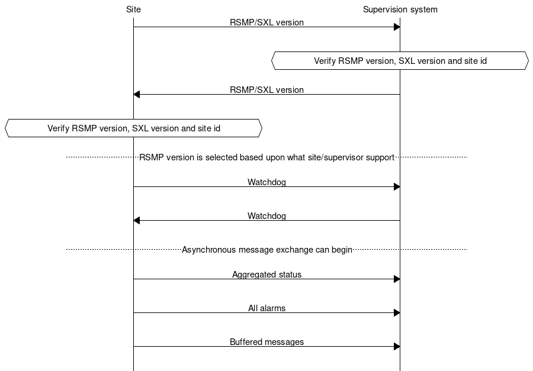
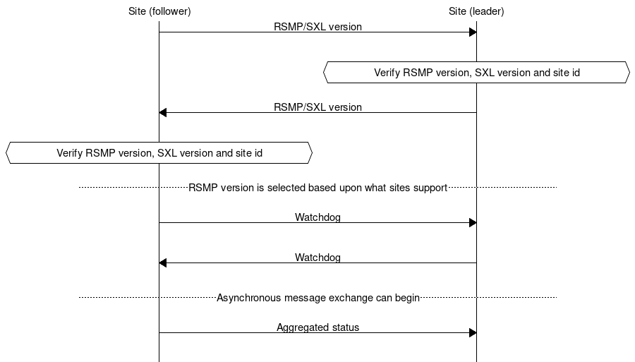

4.3. Transport of data
The message flow is different between different types of messages. Some message types are event driven and are sent without a request (push), while others are interaction driven, i.e. they sent in response to a request from a host system or other system (client-server).
To ensure that messages reach their destinations a message acknowledgment is sent for all messages. This gives the application a simple way to follow up on the message exchange.
To communicate between sites and supervision systems a pure TCP connection is used (TCP/IP), and the data sent is based on the JSon format, i.e. formatted text.
Messages can be sent asynchronously, i.e. while the site or supervision system is waiting for an answer to a previously sent message it can can continue to send messages. The exception is during the first part of communication establishment (see section Communication establishment between sites and supervision system and Communication establishment between sites).
RSMP connections can be established:
Between site and supervision system. See communication establishment between sites and supervision system. The site needs to support multiple RSMP connections to different supervisors. See Multiple supervisors.
Directly between sites. See communication establishment between sites.
Note
Implementing support for communication between sites is not required unless otherwise stated in the SXL.
4.3.1. Multiple supervisors
Note
Implementing support for multiple supervisors is not required unless otherwise stated in the SXL.
Each site needs to support the following:
It must be possible to configure the list of supervisors as part of the RSMP configuration in the site. In the configuration, supervisors are identified by their IP addresses.
It must be possible to configure supervisors as primary or secondary.
There can be multiple secondary supervisors, but only one primary.
A secondary supervisor does not recieve alarms.
A secondary supervisor receives aggregated status and can request, subscribe and receive statuses.
Watchdog messages from a secondary supervisor does not adjust the clock. See section Watchdog.
Except from not sending alarms to secondary supervisors, a site must handle all types of message from all supervisors, including command requests, status requests and status subscriptions. Commands from multiple supervisors are served on a first-come basis, without any concept of priority.
Supervisor connections are handled separately. When a supervisor sends a command or status request, the response is send only to that particular supervisor.
4.3.2. Security
Note
Implementing support for encryption is not required unless otherwise stated.
If encryption is used then the following applies:
Encryption settings needs to be configurable in both the supervision system as well as the site.
For the encrypted communication, SSL 3.0/TLS 1.0 or later is used.
Certificates should be used to verify the identities of equipments.
Equipment which uses RSMP should contain a user interface for easy management of certificates.
The issuing and renewal of certificates should should be made in cooperation with the purchaser unless other arrangement is agreed upon.
4.3.3. Communication establishment between sites and supervision system
When establishing communication between sites and supervision system, messages are sent in the following order.
Message acknowledgement (see section Message acknowledgement) is implicit in the following figure.
Site sends RSMP / SXL version (according to section RSMP/SXL Version).
The supervision system verifies the RSMP version, SXL version and site id. If there is a mismatch the sequence does not proceed. (see section Communication rejection)
The supervision system sends RSMP / SXL version (according to section RSMP/SXL Version).
The site verifies the RSMP version, SXL version and site id. If there is a mismatch the sequence does not proceed. (see section Communication rejection)
The latest version of RSMP that both communicating parties exchange in the RSMP/SXL Version is implicitly selected and used in any further RSMP communication.
The site sends a Watchdog (according to section Watchdog)
The system sends a Watchdog (according to section Watchdog)
Asynchronous message exchange can begin. This means that commands and statuses are allowed to be sent
Aggregated status (according to section Aggregated status message). If no object for aggregated status is defined in the signal exchange list then no aggregated status message is sent.
All alarms (including active, inactive, suspended, unsuspended and acknowledged) are sent. (according to section Alarm messages).
Buffered messages in the equipment’s outgoing communication buffer are sent, including alarms, aggregated status and status updates.
The reason for sending all alarms including inactive ones is because alarms might otherwise incorrectly remain active in the supervision system if the alarm is reset and not saved in communication buffer if the equipment is restarted or replaced.
The reason for sending buffered alarms is for the supervision system to receive all historical alarm events. The buffered alarms can be distinguished from the current ones based on their older alarm timestamps. Any buffered alarm events that contains the exact same alarm event and timestamp as sent when sending all alarms should not be sent again.
Since only one version of the signal exchange list is allowed to be used at the communication establishment (according to the version message), each connected site must either:
Use the same version of the signal exchange list via the same RSMP connection
Connect to separate supervision systems (e.g. using separate ports)
Connect to a supervision system that can handle separate signal exchange lists depending on the RSMP / SXL version message from the site
4.3.4. Communication establishment between sites
When establishing communication directly between sites, messages are sent in the following order.
One site acts as a leader and the other one as a follower.
When establishing communication between sites, messages are sent in the following order.
Message acknowledgement (see section Message acknowledgement) is implicit in the following figure.
The follower site sends RSMP / SXL version (according to section RSMP/SXL Version).
The leader site verifies the RSMP version, SXL version and site id. If there is a mismatch the sequence does not proceed. (see section Communication rejection)
The leader site sends RSMP / SXL version (according to section RSMP/SXL Version).
The follower site verifies the RSMP version, SXL version and site id. If there is a mismatch the sequence does not proceed. (see section Communication rejection)
The latest version of RSMP that both communicating parties exchange in the RSMP/SXL Version is implicitly selected and used in any further RSMP communication.
The follower site sends Watchdog (according to section Watchdog)
The leader site sends Watchdog (according to section Watchdog)
Asynchronous message exchange can begin. This means that commands and statuses are allowed to be sent
Aggregated status (according to section Aggregated status message) If no object for aggregated status is defined in the signal exchange list then no aggregated status message is sent.
For communication between sites the following applies:
The SXL used is the SXL of the follower site
The site id (siteId) which is sent in RSMP / SXL version is the follower site’s site id
If the site id does not match with the expected site id the connection should be terminated. The purpose is to reduce the risk of establishing connection with the wrong site
The component id which is used in all messages is the follower site’s component id
Watchdog messages does not adjust the clock. See section Watchdog.
Alarm messages are not sent
No communication buffer exist
4.3.5. Communication rejection
During RSMP/SXL Version exchange each communicating party needs to verify:
RSMP version(s)
SXL version
Site id
If there is a mismatch of SXL, Site id or unsupported version(s) of RSMP then:
The communication establishment sequence does not proceed
The receiver of the RSMP/SXL version message sends a MessageNotAck with reason (rea) set to the cause of rejection. For instance,
RSMP versions [3.1.5] requested, but only [3.1.1,3.1.2,3.1.3,3.1.4] supportedThe connection is closed
4.3.6. Communication disruption
In the event of an communication disruption the following principles applies:
If the equipment supports buffering of status messages, the status subscriptions remains active regardless of communication disruption and the status updates are stored in the equipment’s outgoing communication buffer.
Active subscriptions to status messages which does not support buffering ceases if communication disruption occurs.
Active subscriptions to status messages ceases if the equipment restarts.
Once communication is restored all the buffered messages are sent according to the communication establishment sequence.
When sending buffered status messages, the
qfield should be set tooldThe communication buffer is stored and sent using the FIFO principle.
In the event of communications failure or power outage the contents of the outgoing communication buffer must not be lost.
The internal communication buffer of the device must at a minimum be sized to be able to store 10000 messages.
The following message types should be buffered in the equipment’s outgoing communication buffer in the event of an communication disruption.
Message type |
Buffered during communication outage |
|---|---|
Alarm messages |
Yes |
Aggregated status |
Yes |
Status messages |
Configurable |
Command messages |
No |
Version messages |
No |
Watchdog messages |
No |
MessageAck |
No |
The following configuration options should exist at the site:
It should be possible configure which status messages that will be buffered during communication outage
The site should try to reconnect to the supervision system/other site during communications failure (yes/no). This configuration option should be activated by default unless anything else is agreed upon.
The reconnect interval should be configurable. The default value should be 10 seconds.
4.3.7. Wrapping of packets
Both Json and XML packets can be tricky to decode unless one always know that the packet is complete. Json lacks an end tag and an XML end tag may be embedded in the text source. In order to reliably detect the end of a packet one must therefore make an own parser of perform tricks in the code, which is not very good.
Both Json and XML could contain tab characters (0x09), CR (0x0d) and LF (0x0a). If the packets are serialized using .NET those special characters does not exist. Therefore it is a good practice to use formfeed (0x0c), e.g. ’f’ in C/C++/C#. Formfeed won’t be embedded in in the packets so the parser only needs to search the incoming buffer for 0x0c and deal with every packet.
Example of wrapping of a packet:
{
"mType": "rSMsg",
"type": "Alarm",
"mId": "d2e9a9a1-a082-44f5-b4e0-6c9233-a204c",
"ntsOId": "AB+81102=881WA001",
"xNId": "23055",
"cId": "AB+81102=881WA001",
"aCId": "A001",
"xACId": "Lamp error #14",
"xNACId": "3052",
"aSp": "acknowledge",
"ack": "Acknowledged",
"aS": "active",
"sS", "notSuspended",
"aTs": "2009-10-02T14:34:34.345Z",
"cat": "D",
"pri": "2",
"rvs": [
{
"n": "color",
"v": "red"
}]
}<0x0c>
JSon code 1: An RSMP message with wrapping
The characters between <> is the bytes binary content in hex (ASCII code), ex <0x0c> is ASCII code 12, e.g. FF (formfeed).
The following principles applies:
All packets must be ended with a FF (formeed). This includes message acknowledgement (see section Message acknowledgement). For example if NotAck is used as a consequence for signal exchange list mismatch during communication establishment
Several consecutive FF (formeed) must not be sent, but must be handled
FF (formeed) in the beginning of the data exchange (after connection establishment) must not be sent, but must be handled
4.3.8. Transport between site and supervision system
Supervision system acts a socket server and waits for the site to connect. If the communication were to fail it is the site’s responsibility to reconnect.
4.3.9. Transport between sites
One site acts as leader and the other one as a follower.
The leader site initiates the connection to the following site.
The follower sites implements a socket server and waits for the leader site to connect.
If the communication were to fail it is the follower site’s responsibility to reconnect.